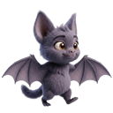
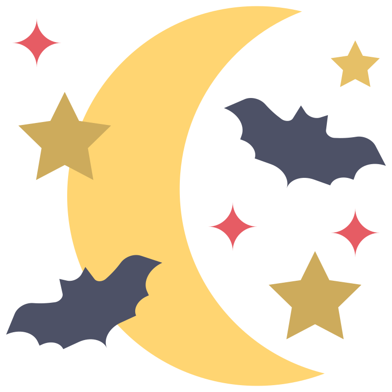
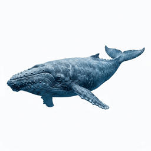
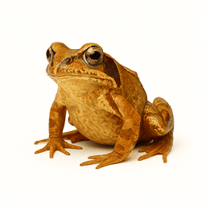

O som vem daqui?



O som vem daqui?
O Radar do Pip!
A Missão do Pip!
O morcego bebé Pip precisa da tua ajuda para encontrar os seus amigos animais na floresta escura! Ouve com muita atenção! Será que o som deles vem do lado esquerdo ou do lado direito? Estás pronto para ser o radar do Pip?

Fantástico!
Chegaste ao fim do caminho mágico!
És um radar de orelhas super afiadas!
És um radar de orelhas super afiadas!